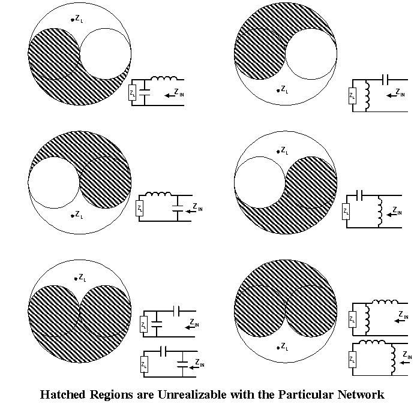

Frequently Asked Questions
Answers to the questions I get asked most often about QuickSmith.
Getting started
What is QuickSmith?
A Smith chart based linear circuit simulator. You build a ladder network out of components, and it shows you where the impedance goes as each one is added.
- Ladder network, built by dragging components onto slots
- Open and save schematic files
- Impedance matching, by hand or automatically
- Frequency and component sweeps
- Interpolated loads for frequency-dependent devices
- Q factors taken into account for every component
- Amplifier design and analysis with gain and noise circles
- Insertion loss and S21 graphs
- Transmission line calculations, including microstrip and coax dimensions
- Constant conductance, VSWR and Q circles
- Import and export of measurement files
- Worked examples, both as documents and as guided tours
How do I get started?
The chart is on the left, the schematic on the right. In the parts bin in the middle of the schematic, pick up the resistor and drag it onto one of the empty slots in the ladder above or below. A box asks for its value. Type one and press Enter.
The dot on the chart moves to where that component puts you, and a coloured arc shows the path it took. From there the spin buttons beside the value walk it up and down, and you can watch the dot travel. Drag the wire onto a slot to clear it again.
What does the load represent?
The load on the far left of the ladder is the device you are looking into. Think of a network analyser with a cable on port 1 and something connected to the end of it. The right-hand end of the ladder, Zin, is what the analyser displays.
What are the default units?
Frequency in MHz, resistance and reactance in ohms, inductance in nH, capacitance in pF. Line lengths are in inches unless you change Length Unit in Settings, which also offers millimetres, metres, degrees and wavelengths. The units are shown beside each value in the ladder, so you never have to remember which slot is which.
How do I change the load resistance and reactance?
At the right-hand end of the parts bin are two lettered chips. Drag RX onto the load slot to enter the load as R + jX, or MA to enter it as a reflection coefficient in magnitude and angle. You can also type straight into the two value boxes under the load once it is placed.
How do I change the step size?
Double-click a value box, or click into it and press s. Either way you are asked for a new step, and the spin buttons beside that box then move by it. Set a coarse step to get near, then a fine one to settle.
Matching
How do I match to 50 ohms?
Enter the load and the operating frequency, then add components until the dot lands in the middle of the chart. The trick is always the same: get onto the circle that passes through the centre, then use the last component to slide along it to the middle.
You do not have to work out which component that is. Under the chart, QuickSmith
keeps a line reading something like
next: series L 122.1 nH, then shunt C 109.7 pF. That is the shortest
way from where you are now to the centre, and it updates as you edit. Turn it off
with Next move in the Overlays panel if you would rather work it
out yourself.
The map below is the classic version of the same idea, and it is worth knowing even though the program now does it for you. Each circle shows where a load has to sit for that particular two-element network to be able to reach 50 ohms.

Can QuickSmith design the matching network for me?
Press Auto-match to 50 Ω in the middle of the menu bar. It works out every two-element network that takes the present load to the characteristic impedance at the current frequency and lists them with their component values and loaded Q, lowest Q first. Lower Q means wider bandwidth. Nothing changes until you press Apply on the one you want.
There are at most four: a series element next to the load followed by a shunt one, or the other way round, each with two solutions. Applying clears the rest of the ladder, because the match is worked out from the load outwards.
Type a number into Loaded Q in that dialog and you get Pi and T networks as well. Those have a third component, which is what lets you choose the Q rather than accept whatever the transformation happens to give. Ask for a Q below what an L-network already achieves and there is nothing to offer, and it will say so.
If the list is empty, either the load is already matched or two elements cannot reach it. Try a transmission line, or add a third component by hand.
Can I tune by dragging on the chart?
Yes. Every component puts a small grab handle on its node. Take hold of one and pull, and QuickSmith solves backwards for the value that puts the node under your pointer, then rebuilds everything from it.
A component can only move its own node along its own locus, so a series part slides round a constant resistance circle and a shunt part round a constant conductance circle. That constraint is the physics, not a limitation of the program, and watching it is a quick way to build the intuition. Parts with no single value to solve for, such as a transmission line, have no handle.
How do I match to an impedance other than 50 ohms?
Two ways. Change Ch. Impedance in Settings and the whole chart is normalised to the new value. Or leave it alone and set a target marker instead: Marker → Set... in the Overlays panel puts a cross wherever you like, and you match to that.
Where do I read VSWR and return loss?
They are always on screen, in the readout column between the chart and the schematic: Zin, Yin, VSWR, return loss, insertion loss, loaded Q, and the bandwidth over which VSWR stays under 2. All values and equivalents under them opens the full set, including the series and parallel equivalents of the input impedance.
For any other point, move the pointer over the chart. The box under it follows you and reads out the impedance you are hovering over.
Where can I find tutorials or examples?
Help → Guided examples picks one of the worked designs and rebuilds it a component at a time, saying what each one does and why it goes where it does. Step back and forth with Back and Next. Nothing special happens while a tour runs, so you can stop at any step and carry on editing by hand.
Help → Examples in full is the written version: the same designs worked through in detail, including the two amplifier examples.
Working
How do I undo something?
Ctrl+Z, or ⌘Z on a Mac, steps back through the design. Add Shift to go forward again. Both are in the File menu too.
A whole drag on the chart counts as one undo rather than one per pixel, and a guided example counts as one for the entire tour, so undo takes you back to your own design rather than walking you backwards through somebody else's.
How do I sweep frequency or a component?
Set the range in the Response panel under the chart: choose what to sweep, then Start, Stop and Step. Sweep → Generate then draws the swept locus on the chart, and Sweep → Clear removes it. The same settings, plus the trace colour, are in Settings if you prefer them there.
What does the response graph show?
Insertion loss and S21 across the sweep range. The source is the characteristic impedance, 50 ohms by default, and the network is terminated by whatever load you have set, so this is a transducer loss: it counts mismatch as well as dissipation. A lossless network that matches its load reads 0 dB.
This used to be a separate window. It is now a panel on the main page that redraws as you edit, so you can watch the passband move while you turn a value.
How do I avoid losing my work if the page reloads?
File → Save Session stores the design in this browser, and a reload picks it up again. Restore Session recalls the last one you saved, and New Session throws it away and starts clean.
For anything you want to keep properly, use Save File to write a
.sch, or Copy Share Link to put the whole design in a
web address.
How do I get a track width instead of an impedance?
Data → Microstrip and coax. Give it the substrate, its dielectric constant and its thickness, and every transmission line in your ladder is listed with the track width and the physical length that would build it. For coax, give it the bore and it returns the inner conductor diameter instead.
Apply to the design rewrites the ladder in millimetres and sets the velocity factor to match, so the circuit behaves exactly as it did but is now expressed in numbers you can hand to a layout tool. That needs one velocity factor to cover every line, which a microstrip board only gives you when the lines are all the same width: a narrow track keeps more of its field in the air and travels faster than a wide one. When they differ, the button is withheld and the dialog says why. Read the lengths off it and leave the design in degrees.
What is the Amplifier Design window for?
Amp. Design in the menu bar opens it. There are two Smith charts, one for the source plane and one for the load plane, and you use them to trade gain against noise figure. Stability circles, gain circles and noise circles are all drawn for you. See the small signal amplifier example in Help → Examples in full. Back in its menu returns you to the chart.
Getting data in and out
How do I load a measurement from my network analyser?
Data → Import Touchstone reads a .s1p or
.s2p, the format every VNA exports, and makes it the load. S11 becomes
a frequency-dependent termination, interpolated between the measured points, so
you can match a real antenna instead of a typed-in impedance. The sweep range is
set to the range of the file, and if the file was measured against a different
reference impedance it is renormalised to yours.
Data → Export Touchstone writes the network back out as a
.s1p. If you have not run a sweep it runs one first, so the file is
always a description of the circuit rather than of whatever happened to be on the
chart. There are sample files in the touchstone folder.
How do I share a design with someone else?
File → Copy Share Link puts the whole thing in a web address: frequency, load, every component and the chart overlays. Opening that address rebuilds the design exactly, so an answer on a forum can be a link to the working circuit instead of a screenshot and a list of values. A four-component match comes to about 120 characters. A link carrying measured load data is longer.
Can I get a picture of the chart, or the numbers?
All in the menus.
- File → Capture Chart (PNG) for an image.
- File → Chart as SVG for vector art that stays sharp at any size and opens in Illustrator, Inkscape or a word processor.
- File → Print Chart prints just the chart, in the light palette whatever the screen is set to.
- Data → Export Sweep (CSV) for a spreadsheet, one row per point, with impedance, VSWR and return loss worked out for you.
How do I import external data onto the chart?
Data → Import Gamma reads QuickSmith's own JSON format, and
Export Gamma writes it. Sample files are in the gam
folder. To make one, generate a sweep and then export it. Touchstone is the better
choice for anything coming from an instrument.
Other questions
Does it work on a phone or tablet?
Yes. The layout reflows to the screen, all twelve slots are there, and dragging components works with a finger. Two things need a mouse and are simply absent on a touch screen: the readout that follows the pointer around the chart, and double-clicking a value to change its step size. For the step size, tap into the value box and press s instead.
Where do I get the latest version?
From GitHub. It is a set
of static files with no build step, so you can also just download it and open
index.html.
Where can I read more about the formulas behind this?
- Electronic Applications of the Smith Chart, Phillip H. Smith, Robert E. Krieger Company, Malabar, Florida.
- Hewlett-Packard Application Note 970, February 1978.
- Microwave Transistor Amplifiers, Guillermo Gonzalez, Prentice-Hall, 1984.
- QEX, July/August and September/October 2010. Using QuickSmith, Parts 1 and 2, by Harold Kinley, WA4GIB.